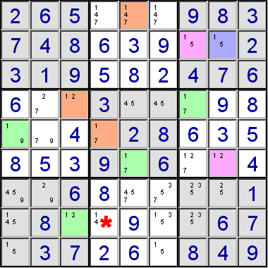
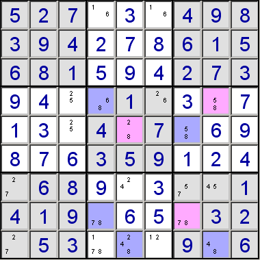
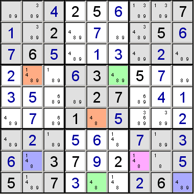
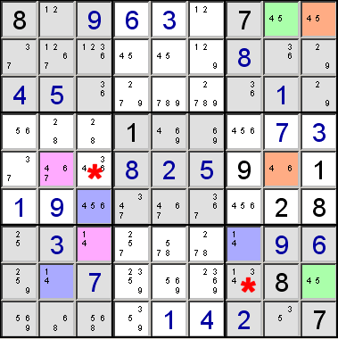

Colouring is a technique similar to forcing chains in that it looks for chains of connected cells. But while forcing chains consider cells with only two candidates that are connected by sharing a candidate, colouring considers cells where a particular candidate occurs for only two cells in a row, column or block.
Consider this example:

This example contains two separate conjugate chains of 1s - marked by orange/green and pink/blue. We're only interested in part of the orange/green chain, as colouring can show that r8c4 cannot be a 1, by considering the chain r8c3 => r4c3 => r5c1 => r5c4. The logic goes like this:
So, in either case, we've shown that r8c4 cannot be 1, we've eliminated a candidate.if r8c3 is 1 then
r8c4 cannot be 1 as both cells occupy the same row.
if r8c3 is not 1 then
r4c3 must be 1 (because column three must contain a 1 somewhere), so
r5c1 cannot be 1, as it is in the same block, so
r5c4 must be 1 (because row five must contain a 1 somewhere), so
r8c4 cannot be 1.
Here's another example:

In this example, we can show that the blue cells cannot hold the 8. This is because if r9c5 holds 8, then, following the conjugate chain, so must r8c4, and since both cells are in the same block, they can't both hold 8. This means that none of the blue cells can hold 8, and so all the pink cells must. Note: r4c4 and r8c4, and r9c5 and r9c8 are not conjugates, and so cannot be used to colour each other, because of the candidate 8 in r9c4,
When a unit has only two cells with a particular candidate, those cells are "conjugates" of each other, and are said to be "strongly linked". From the rule of Sudoku, we know that one of these cells must hold the number, and other cannot. Conversely, if we know that one of the cells cannot hold the number, then the other must. This allows us to form chains of cells, with successive cells having alternate "colours". (The term "colouring" is used because the technique is analogous to marking up the grid using coloured pens.) We don't know which colour represents the true state, but examination of the chain may enable us to make deductions leading to the elimination of candidates.
Multi-Colouring: It is sometimes possible to use seperate colouring chains to make eliminations. There are two commonly used methods.
Method 1. This technique can make eliminations because one of the chains indicates which of the states is the false state for the other chain. Consider the following puzzle:

This example contains two separate conjugate chains of 4s - marked by orange/green and pink/blue. Blue cells is weakly linked to both an orange and green cells of the "other" chain, and this is the key pattern to watch for. They're not conjugates, or strongly linked, as there are other cells with a candidate 4 in the same column or row. (Weakly linked cells means that one being true will cause the other to be false, but one being false does not cause the other to be true.) We can use this to show that both the blue cells can have the candidate 4 eliminated. Remember the premise of colouring; either all pink or all blue cells must be true, and for the other chain, either all orange or all green cells must be true. So if the orange cells are true, then the blue at r8c2 must be false because of their weak link. Likewise, if the orange cells are false, and the green cells are true, the blue at r9c9 must then be false. So either way, the blue cells must be false.
Method 2. This technique can be used to connect together apparently separate chains. Consider the following puzzle:

This example contains two separate conjugate chains of 4s - marked by orange/green and pink/blue. These two chains can be joined together to make one longer chain. Cells r8c2 and r8c9 are weakly linked. They're not conjugates, or strongly linked, as there is another cell with a candidate 4 in the same row. Weakly linked cells means that one being true will cause the other to be false, but one being false does not cause the other to be true. The two chains both have two cells that are weakly linked to cells in the other chain, r8c2 and r8c9, and also r5c2 and r5c8. What's more, these cells are linked to opposite links in the true/false alternate states. So, if r5c2 is true, then r5c8 is false, and then, because of the orange/green conjugate chain, r8c9 is true. Alternatively, if r5c2 is false, then because of the pink/blue conjugate chains, r7c7 is true, and so r8c9 is false, and then, because of the orange/green conjugate chain, r5c8 is true. In other words, the two weak links have now joined the two separate chains into one strongly linked one. The net effect in the above example is that the candidate 4s in r5c3 and r8c7 can both be eliminated as they both share units with strongly conjugated cells.
This technique is known as "simple colouring", and "multi-colouring" when apparently separate colouring chains can be joined. There are also other colouring techniques, for example "super-colouring", a technique that makes deductions by combining the implications from conjugates of all candidates for all cells, although this technique is beyond the ability of most, if not all, human solvers.